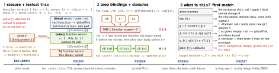

javascript · folio
In one line: Scope is lexical: fixed by where code is written. Every function
keeps [[Environment]], the Environment Record it was created in; a closure is that link
keeping bindings (not values) alive. this is dynamic: set by how
the function is called and looked up in the nearest record that has one — arrows have none,
so they see the enclosing this.
Download PDF Print view LaTeX source


Environment Records — the scope chain
- A record maps names → bindings;
[[OuterEnv]]links it to the enclosing one. Lookup walks that chain; a name found nowhere → ReferenceError on read,"undefined"fromtypeof, a new global property on sloppy assignment. - Declarative (block,
catch,let const class) and its two kinds: Function (+[[ThisValue]],[[ThisBindingStatus]]lexical / initialized / uninitialized,[[NewTarget]]) and Module (imports as live indirect bindings;this=undefined). Object (with). Global = an Object record over the global object (var,function) + a Declarative record (let const class) +[[GlobalThisValue]]. - One execution context per script, module or call: code state, Function, Realm, ScriptOrModule, LexicalEnvironment, VariableEnvironment, PrivateEnvironment (
#names, ES2022), Generator.thisis not a field of it (ES5’s ThisBinding was): ResolveThisBinding walks outward to the first record that has one. - A function object carries
[[Environment]](the closure),[[ThisMode]](lexical = arrow, strict, global = sloppy),[[HomeObject]](forsuper),[[Realm]].
Hoisting: bindings exist at entry
| declaration | at scope entry | read before its line | scope |
|---|---|---|---|
var x | undefined | undefined | function |
function f(){} | the function | callable | functiona |
let, const | uninitialised | ReferenceError (TDZ) | block |
class C | uninitialised | ReferenceError (TDZ) | block |
using r | uninitialised | ReferenceError (TDZ) | block; disposed at exit |
var f = ()=>{} | undefined | f(): TypeError | function |
| parameters | uninitialisedb | (a = b, b): ReferenceError | own; body vars split off if any default |
import {x} | linked first | live, read-only | module |
var, undefined until the block runs (Chrome, Firefox; Safari
differs). bundefined only with duplicate names (sloppy).
- TDZ is temporal: from scope entry until the declaration executes. A closure called after
let x = 1ran may readxthough written above it.typeof xin the TDZ throws;let x = xthrows; allcases of aswitchshare one block. - Redeclaring:
var+var/functionis allowed (var a = 1; function a(){}→ais 1);let const class import+ anything in the same scope is an early SyntaxError — nothing runs. Classic scripts share one global lexical scope:let xin two<script>s throws in the second. - Script top level:
var/functionbecome non-configurableglobalThisproperties (deletefails); sloppyx = 1makes a configurable one;let const classmake none. A module (or CommonJS file) keeps its top level to itself.
Closures — what is kept
- The binding, shared: a later write is seen by every closure over it. To fix a value, pass it as an argument or copy it into a
constinside the loop body. React’s stale closure is a render’s old bindings. for-of/for-inwithlet/const: a fresh record each turn.for(let;;): copied per iteration (drawing 2).var: one binding.- Default parameters get their own scope: closures in the parameter list never see the body’s
vars. - Named function expression
function fact(){}:factis an immutable binding visible only inside;fact = 1is ignored (sloppy) or a TypeError (strict). - Dynamic code: direct
eval(s)sees the local scope (sloppy: itsvars land in the caller); indirect(0, eval)(s)andnew Function(s)see only the global scope. - V8: variables an inner function references move into a heap context; every closure made in that scope points at that one context, so a big array captured by one closure lives as long as any of them. Leaks are reachability: a listener, timer or cache holding a closure.
Traps
- “
let/constaren’t hoisted” — they are, uninitialised (TDZ). - “A closure copies the value” — it keeps the variable (3 3 3).
- An arrow as an object method:
{ n: 1, m: () => this.n }reads the outerthis.
Trace — each example run on its own
var a = 1; function f() { log(a); var a = 2; } f(); // undefined
{ log(b); let b = 2; } // ReferenceError
log(typeof h); var h = 1; function h() {} // "function"
var x = 1; function g(p = () => x) { var x = 2; return p(); }
g(); // 1: the parameter scope
(function k() { k = 1; return typeof k; })(); // "function"
// (strict code: TypeError)
const o = { n: 'o', m() { return this.n; },
later() { setTimeout(() => log(this.n)); } };
const m = o.m; m(); // strict TypeError, sloppy globalThis.n
(o.m)(); o.m?.(); o['m'](); // 'o' 'o' 'o': reference kept
(0, o.m)(); (o.m = o.m)(); // a bare value, like m()
o.later(); // 'o': arrow reads later's this
o.m.bind({ n: 'x' }).call(o); // 'x': bind is permanent
function F() { log(this.n); }
new (F.bind({ n: 'x' }))(); // undefined: new skips boundThisthis — the details
- Arrows: no own
this,arguments,super,new.target; noprototype;new→ TypeError; call / apply / bind ignore the thisArg (bind still pre-fills arguments). An arrow property of an object literal sees thethisoutside the literal. - Lost
this:arr.forEach(o.m),const {m} = o,setTimeout(o.m)hand over a value, not a reference. Fixes:o.m.bind(o),() => o.m(), an arrow class fieldonTap = () => this.go()— fixed for life, but one closure per instance, not on the prototype. - bind is permanent: call, apply and a second bind cannot change it;
newignores the boundthisbut keeps the bound arguments. - Classes (always strict): instance field initialisers → the instance; static fields, static blocks, static methods → the class. Derived constructor:
thisbeforesuper()→ ReferenceError, so is a secondsuper(). superis fixed by[[HomeObject]], where the method is written: moving a method changes itsthis, never itssuper. Getters and setters get the object accessed through, also via the prototype chain.- Hosts pick it for callbacks: array iteration methods take a
thisArg(elseundefined); Promise reactionsundefined; DOM listenerscurrentTarget; browser timerswindow, even for a strict function.
| top-level code | this |
|---|---|
| classic script, strict or not | globalThis (ES2020; page window, worker self) |
| ES module | undefined |
| CommonJS file (Node) | module.exports |
direct / indirect eval | the caller’s this / globalThis |
Strict mode (classes, modules: always)
'use strict' first in a script or function body. this never substituted or boxed · undeclared assignment → ReferenceError · writing a read-only, getter-only or non-extensible property, delete of a non-configurable one → TypeError · with, delete x, duplicate parameters, 010, "\045", eval/arguments as names → SyntaxError · arguments no longer aliases parameters (also unaliased whenever parameters are not simple); arguments.callee → TypeError · eval’s vars stay inside it · 'use strict' in a function with default, rest or destructured parameters → SyntaxError.
using (ES2027)
using r = open(): const-like, block-scoped, TDZ. At block exit calls r[Symbol.dispose](), last declared first; null/undefined allowed, any other value without the method → TypeError; errors chain into a SuppressedError. Allowed in blocks, function bodies, static blocks, a module’s top level, for / for-of heads; not at a classic script’s top level, not directly in a switch, no destructuring. await using awaits [Symbol.asyncDispose](), falling back to [Symbol.dispose]().